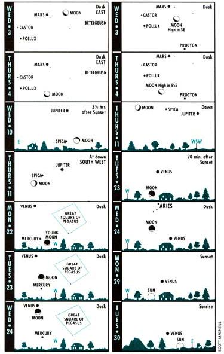

Diagrams for dusk and dawn show scenes about 45 minutes after sunset or before sunrise, as viewed from 40` west latitude (approximately correct for the United States or southern Canada). ""Age"" of the moon is amount of time since New Moon. -Adapted from Sky Calendar, Abrams Planetarium, Michigan State University, East Lansing, Michigan 48824.